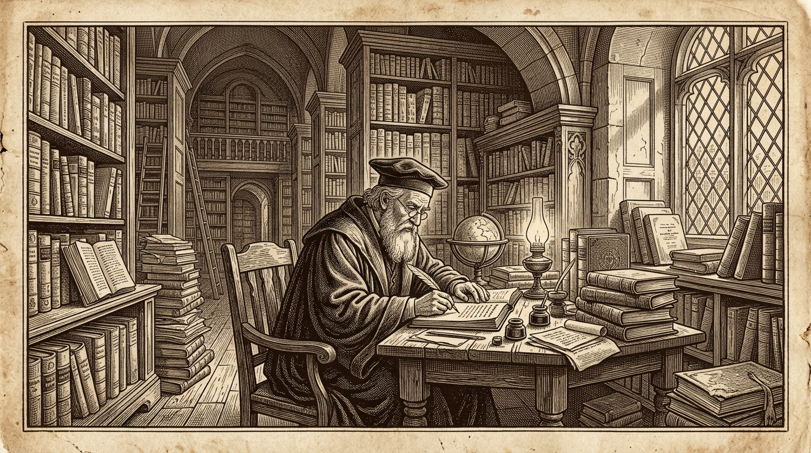

【 头版特稿 · 深度观察 】
数字媒介时代的「深阅读挽歌」与重构指南
“当我们习惯了被十五秒短视频和碎片信息流冲刷，我们是否还拥有构建万字宏大叙事与深度逻辑链条的定力？”

【图版一】古籍书斋中的伏案长思 · 19世纪铜版雕刻手艺复刻
铅字印刷时代的报章，每一道油墨与纸张的凹凸都凝结着斟酌与克制。在排字工人的铅盘中，字符拥有重量、温度与物理摩擦阻力。而如今，指尖轻触屏幕即可生成海量字节，但信息的丰裕却往往伴随着意义的贫瘠。
重构深度阅读的核心，并不在于抵制现代数字终端，而在于为阅读者创造具有「仪式感」的静止空间。本博客之所以采用传统报纸的纵向分栏与衬线字阶，正是试图在喧嚣的数字世界中，为读者辟出一块呼吸平稳的文字飞地。
文字不仅是思想的容器，更是思维律动的投射。当我们重新学会凝视一段结构紧凑的段落，思维的深潜便在静默中发生。
重构深度阅读的核心，并不在于抵制现代数字终端，而在于为阅读者创造具有「仪式感」的静止空间。本博客之所以采用传统报纸的纵向分栏与衬线字阶，正是试图在喧嚣的数字世界中，为读者辟出一块呼吸平稳的文字飞地。
文字不仅是思想的容器，更是思维律动的投射。当我们重新学会凝视一段结构紧凑的段落，思维的深潜便在静默中发生。